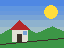

TinyMosaic is a toy version of NCSA Mosaic, the browser that made the World Wide Web popular in 1993. It reads this page the way Mosaic did: the bytes, then the tags, then a tree, then the looks, then the lines.
Everything it needs is written from scratch in the same repository:
URL;

arrows, Page Up, Page Down scroll
r, h reload, home
p, s, t, d, l the page, or as its source, its
tokens, its tree, or in line mode
in line mode: 2 then Return follow link 2
w lines broken greedily, or as TeX does
[ and ] the page narrower, wider
Next: a short history of the web, or the first web site, at CERN.
And a fill-out form, Mosaic 2.0's.